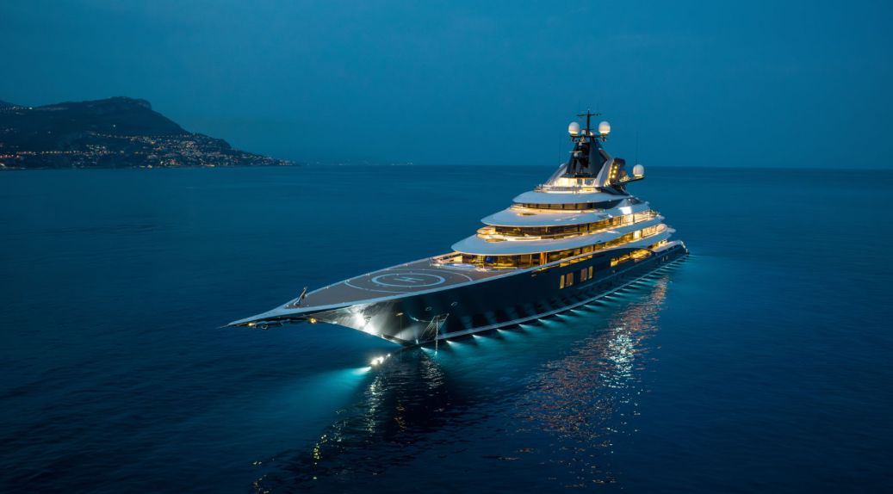
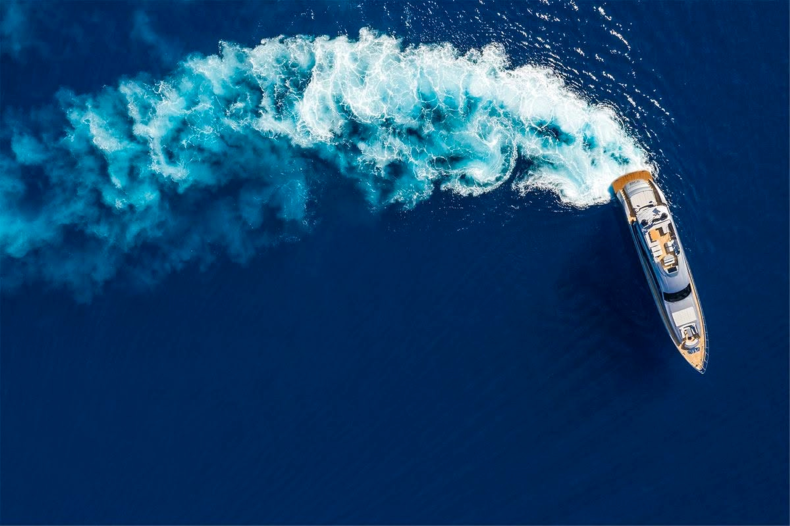
MONARCH
Superyachts
Role
Heritage
Não construímos iates. Construímos legados que flutuam.
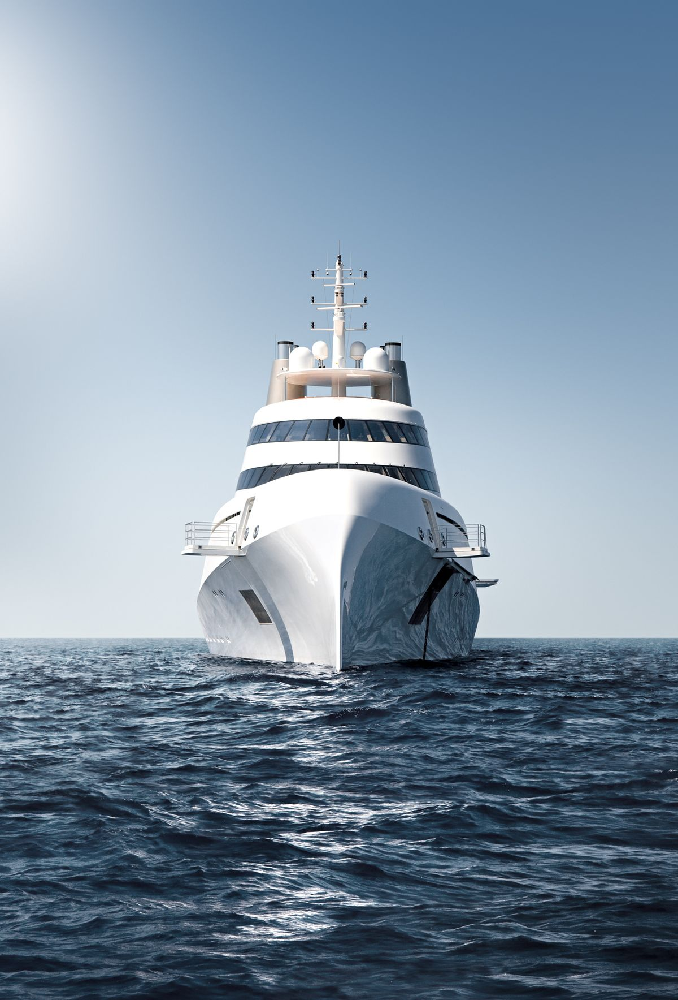
0anos de estaleiro
0obras entregues
0metros — doca máxima
0estaleiros no mundo
A frota
Obras-primas em alto-mar.
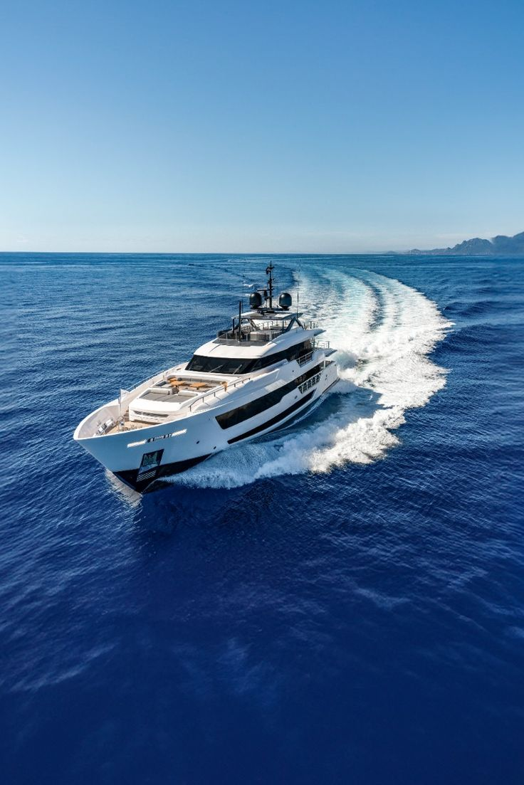
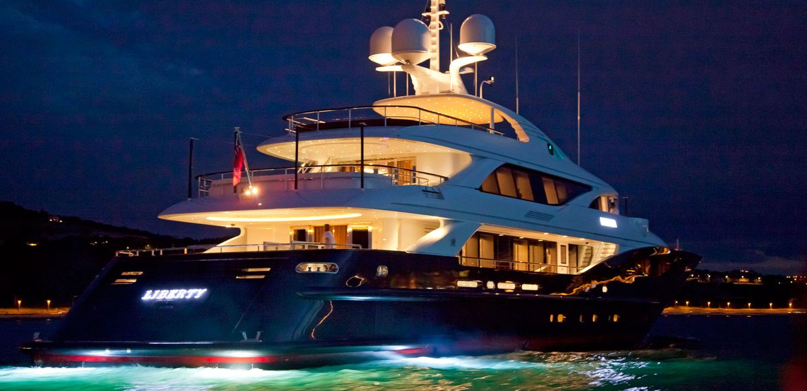
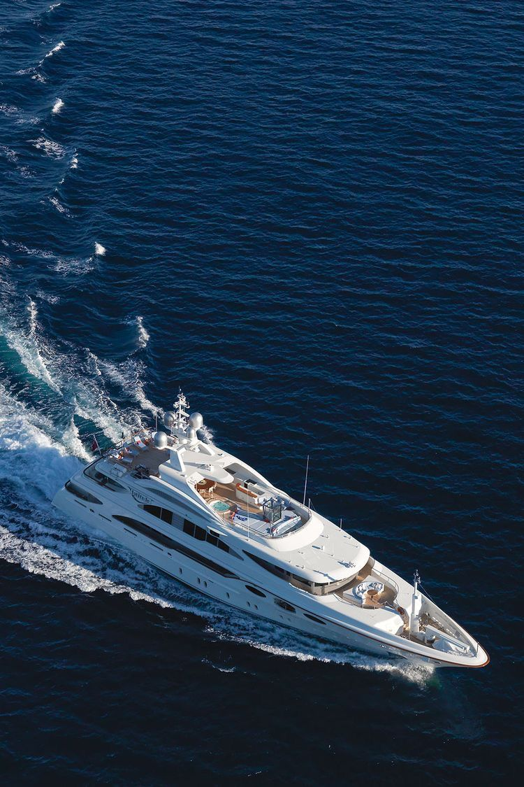
O atelier
Quatro atos, trinta e seis meses.
01
A linha pura
Uma folha em branco e a ambição de um único armador.
02
Hidrodinâmica
Tanques de prova e CFD refinam cada grau do casco.
03
Teca & mármore
Mestres toscanos, sem um único parafuso aparente.
04
Provas de mar
Semanas de ensaio até a certificação mais rigorosa.
Galeria
Vida a bordo.
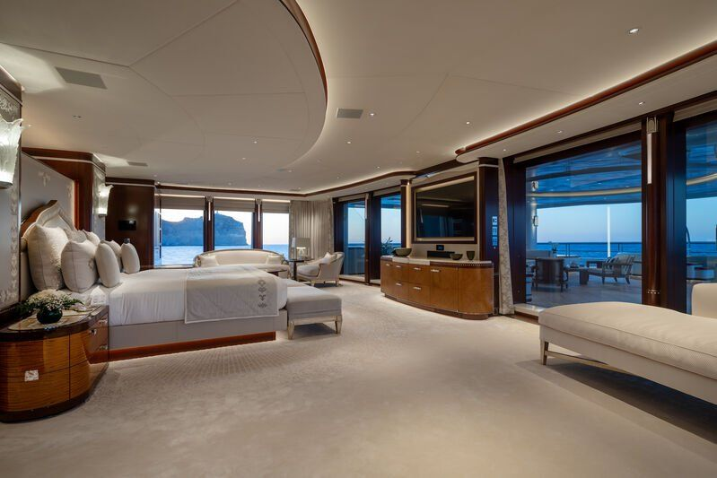
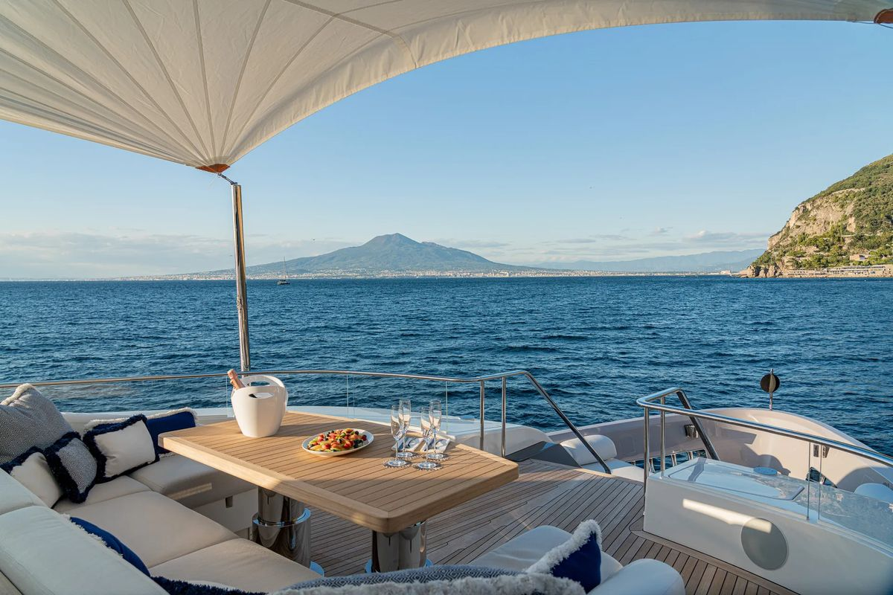
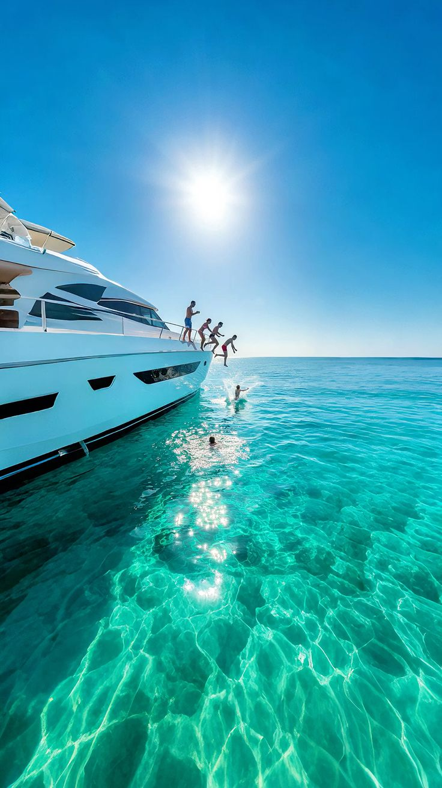
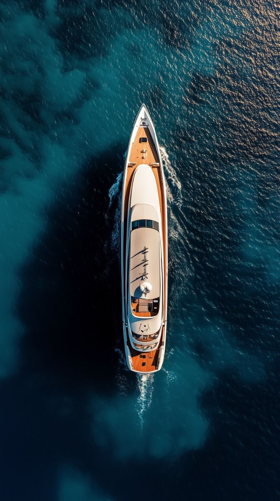
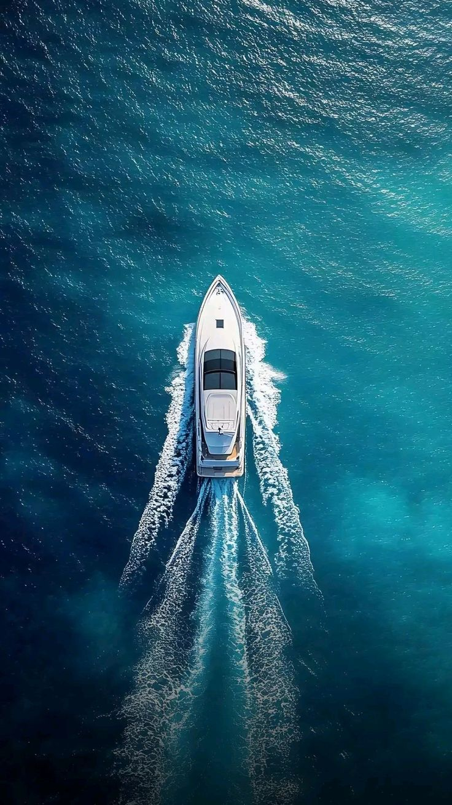
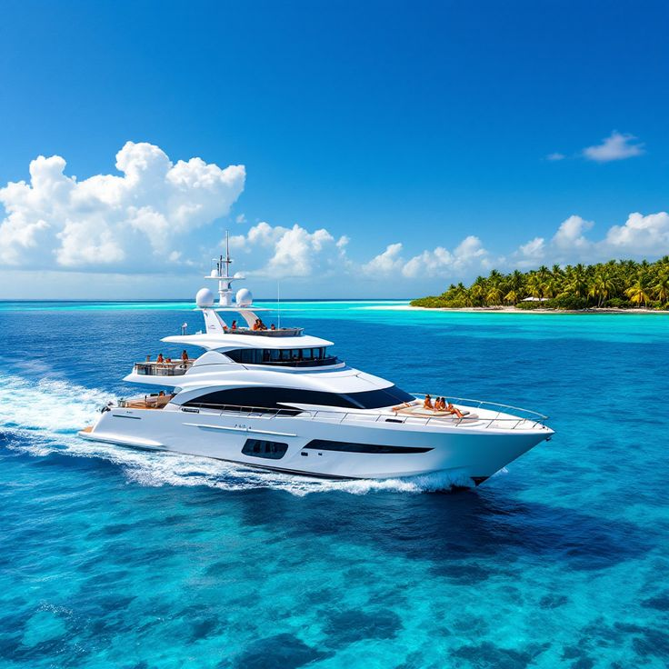